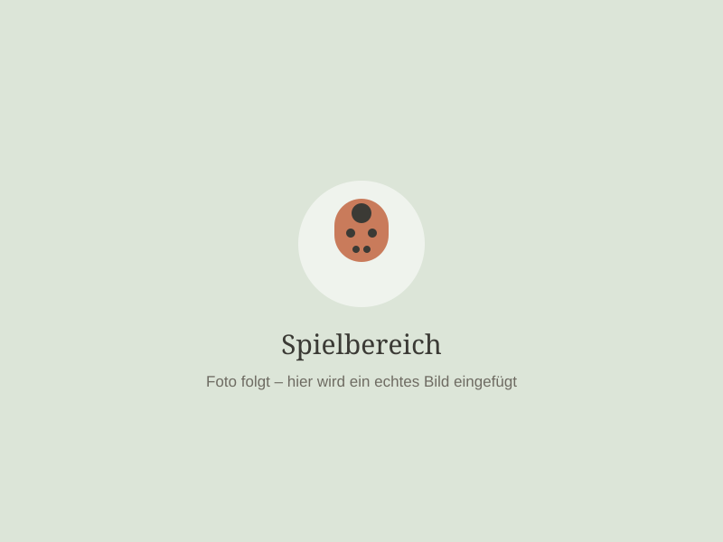
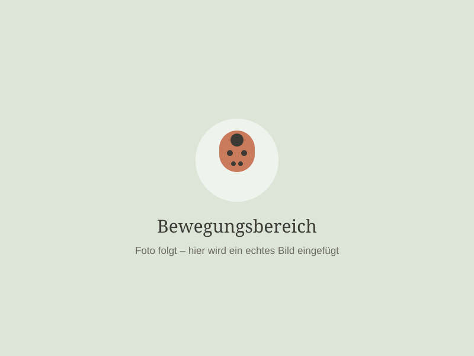
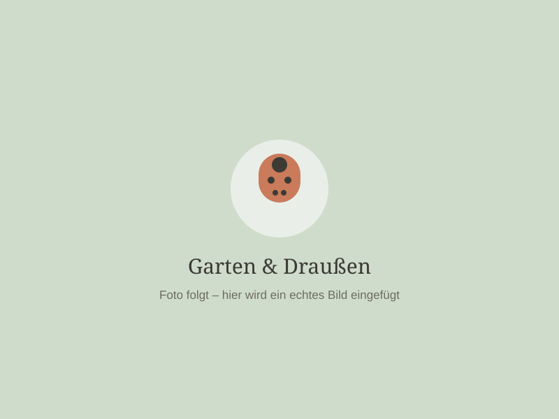

💬
Regelmäßiger Austausch
Kurze Gespräche beim Bringen und Abholen, Entwicklungsgespräche und ein offenes Ohr für Fragen.
Bei der Glückskäfer Bande betreue ich eine kleine Gruppe von Kindern. Dadurch bleibt genügend Zeit, jedes Kind individuell wahrzunehmen und auf seine Bedürfnisse einzugehen.

Bewegung ist ein wichtiger Bestandteil unseres Tages. Kinder haben einen natürlichen Bewegungsdrang – und den möchte ich unterstützen.
Ob drinnen oder draußen: Wir laufen, klettern, balancieren, spielen, entdecken die Natur und sammeln dabei ganz nebenbei neue Erfahrungen.


Jedes Kind hat sein eigenes Tempo, seine eigenen Bedürfnisse, Interessen und seine eigene Persönlichkeit.
Deshalb gibt es bei mir nicht den Anspruch, dass jedes Kind alles zur gleichen Zeit können oder machen muss. Ich beobachte, begleite und unterstütze die Kinder dort, wo sie gerade in ihrer Entwicklung stehen.
Kinder dürfen bei mir Kinder sein.
Eine gute Betreuung funktioniert für mich nur mit gegenseitigem Vertrauen. Deshalb ist mir eine offene und respektvolle Zusammenarbeit mit den Eltern besonders wichtig.
Kurze Gespräche beim Bringen und Abholen, Entwicklungsgespräche und ein offenes Ohr für Fragen.
Verlässliche Vereinbarungen zu Zeiten, Essen, Schlafen und allem, was euch als Familie wichtig ist.
Denn wenn Eltern Vertrauen haben, kann auch das Kind in Ruhe ankommen.
Du möchtest dein Kind in einer kleinen, liebevollen und familiären Kindertagespflege betreuen lassen? Dann melde dich gerne bei mir. Ich freue mich darauf, dich und dein Kind kennenzulernen.